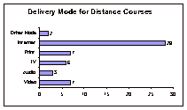

September 2002
Evaluation of the effectiveness of online courses may take into account many factors that consider the role of the instructor, institution and learner as well as the interaction between these three. Typically, these evaluations use surveys and interviews to garner faculty and student perceptions of online courses as well as student-oriented performance indicators such as tests and analysis of complexity of online discussions (Schutte, 2000, Schoech, 2000, Belanger & Jordan, 2000, Zuniga & Pease, 1998).
Variables that typically relate to faculty include:
Variables that typically relate to the institution include:
Variables that typically relate to the student include:
The evaluations carried out in the Barrier-free project focused on variables relating to the learner and to the course developer (who may or may not be the course instructor). Learners were identified as individuals in a number of needs groups such as hard of hearing, deaf, blind, low vision, learning disabled, and general population. Course developers were identified as ranging in expertise from professional course developer to educator with limited or no experience with courseware. The evaluation was concerned with three aspects: usability, optimal accommodations for learning and the repository model. A complete description of the repository model can be found in section 2 the design final report.

Usability and Evaluation Methods
This project uses the wealth of human factors and usability testing methods
research available to carry out evaluations with the player and editor versions
of the Barrierfree environment. Usability factors such as ease of use, learning
and customizability, were seen as an important factors in the project's
success because the environment is intended to be highly interactive and users
must manage the software. User preferences, expectations and needs were therefore
considered in each phase of the evaluation.
There is a host of proven human design methodology for preparing for and addressing end-user requirements. These published standard practices are also widely available on the Internet. The following table is a sample of electronic resources provided by leading experts and institutions in the field that were drawn on for usability evaluation methods (UEMs) and metrics in this project.
| Resource Description | URL |
| Compilation of Usability Resources and References (Jeff Axup, 2002) |
http://www.userdesign.com/usability.html |
| Comparison of Usability Evaluation Methods (UEMs) (based on Gray & Salzman, 1998) |
http://www.userdesign.com/docs/uem_compare.html |
| Efficient & Inexpensive UEMs (by Jacob Nielsen, 1994) |
http://www.useit.com/papers/guerrilla_hci.html |
| HCI Web resources from Online Computer Library Centre (OCLC) |
http://www.oclc.org/usability/resources/index.htm |
| Heuristic Evaluation (Jakob Nielsen) | http://www.useit.com/papers/heuristic/ |
| How to Plan and Report a Usability Evaluation (Seth Gordon, 2000) |
http://builder.cnet.com/webbuilding/pages/Graphics/Evaluation/ |
| Usability and Inspection Methods (James Hom, 1998) |
http://jthom.best.vwh.net/usability/ |
| Usability Evaluation (University of MD) |
http://www.cs.umd.edu/~zzj/UsabilityHome.html |
| Usability Evaluation Techniques (Napier U, School of Computing) |
http://www.dcs.napier.ac.uk/marble/Usability/Evaluation.html |
| Usability Metrics (Napier U, School of Computing) l |
http://www.dcs.napier.ac.uk/marble/Usability/UsabilityMetrics.htm |

These resources augment the body of print-based research upon which the evaluation methods for this project were built. The electronic resources are especially useful for sharing of basic usability principles with team members so that issues related to human-computer interaction (HCI) and user-needs were salient from the outset. In addition to usability principles, usability evaluation methods (UEMs) were used. One significant difficulty encountered with these conventional UEMs was the lack of methodologies for users using alternative forms of accessing software (e.g., using screen readers) and of communication (e.g., using a gestural language to communicate).
An inclusive UEM for gestural language users was thus developed and investigated as part of the project. The main activities of the evaluation team were as follows:
Along with reports and recommendations to the development team, the deliverables from these activities include:
As part of the team’s background research into distance and online education, a survey of best practices in distance education was developed and sent to 200 individuals identified as distance educators. The survey focused on best practices and pitfalls of distance education as well as media used for delivery of distance courses and accommodations employed for individuals with special needs.

Evaluation Process
Our evaluation goal was to understand the criteria for successful distance education
and to assess the practices employed by educators to make their courses accessible
to all learners. A copy of the survey instrument that was developed by the evaluation
team is available on page Error! Bookmark not defined. of this report.
Methods
The survey was emailed to two hundred educators identified through their participation
in conferences related technology and distance education. 78 of the recipients
responded to the investigators but only 33 completed the survey. The survey
consisted of open-ended and forced-choice questions that covered background
information, accessibility practices and recommendations.
Results
The majority of respondents taught post-secondary or graduate level distance
education (DE) courses (see Table 1). On average, the respondents had developed
three distance courses, had taught distance education courses for three years
and had taught four distance courses at the time of the survey.
Analysis
The survey responses were compiled and analysed in a variety of ways. Descriptives
and simple counts were used for the closed and background questions and a coding
system was developed for the three open-ended questions. Twenty-five percent
of the responses were coded by two individuals trained in the coding scheme
and an average intraclass correlation (ICC) of .56 was achieved (a moderate
correlation).
| Course Level | N |
| Other | 2 |
| Professional Develoment | 8 |
| Graduate | 15 |
| Post-Secondary | 25 |
| Secondary | 2 |

Table 1: Education level of DE courses.
These educators delivered courses through a variety of means with the Internet being the chief mode of delivery (see Table 2). Eight educators used more than one delivery mode. Even though there have been long-standing guidelines for Internet accessibility such as the Web Accessibility Initiative (WAI), of the 33 respondents, 19 stated that they had not used any accommodation to make their course accessible to learners with special needs (see Figure 1). The course subject areas spanned a wide range of subjects with the majority being sciences, humanities and education.
We asked educators what three things they believed were critical in fostering course success. Of the 15 possible coding categories, five categories were most commonly reported: Technology, Interaction, Tech Support, No Response and Course Management with Interaction having the greatest count at 18 of 33 respondents.
| Course Level | N |
| Other Modification | 4 |
| None | 19 |
| W3C | 8 |
| ASL | 1 |
| Describing Video | 1 |
| Captioning | 2 |
Table 2: Number of respondents using accessibility modifications.


Figure 1: Count of delivery mode for distance courses.
Educators were also asked what recommendations they would make to a new distance educator. Possible categories of responses were: technology, leaning theory, general teaching theory & methods, communication load, tech support, workload, experience, no response, distance ed strategies, other, course management, career implications and administrative support. Thirty-three percent (11/33) provided recommendations in the communication category. When asked what pitfalls they would warn new distance educators about, 31% of the respondents noted the increased workload and demands on the instructor related to distance education. The next two most frequently cited pitfalls were related to issues around administration (17%) and career (13%) Table 3 outlines other response categories and ICC rating.
| Response Category | Count | ICC |
| Technology | 15% | 26% |
| Leaning Theory | 13% | 14% |
| General Teaching Theory & Methods | 5% | -9% |
| Communication Load | 3% | 29% |
| Tech Support | 2% | -9% |
| Workload | 30% | 65% |
| Experience | 7% | -9% |
| No Response | 3% | -4% |
| Distance Ed Strategies | 32% | 29% |
| Other | 0% | 0% |
| Course Management | 2% | -4% |
| Career Implications | 5% | 74% |
| Administrative Support | 11% | 0.81 |

Table 3: DE Pitfall Categories and Reliability Rating
Discussion
The results from this survey reveal important issues related to course delivery,
learner needs and instructor needs in the field of distance education. The most
common medium for course delivery reported by our respondents was the Internet
yet more than half of the respondents said that they had not made any accommodations
to make their courses accessible to individuals with special needs. The question
of why this number may be so low needs to be addressed. It is unlikely that
instructors and course developers are deliberately seeking to exclude some learners
from their content. It is more likely that course developers are not sure how
courses can be made accessible or are not able to acquire accessible content
for their courses. The Barrierfree project is timely in its efforts to enable
course developers to have access to tools and content that will make online
courses accessible to all learners.
Of particular interest to this project was the rating by respondents of “comfort with technology” for the instructor and learner as a critical factor for success . The result highlights the importance of user-friendly design for the learner and instructor interfaces as key in fostering course success in this new medium.
The respondents already involved in distance education noted the great demand and workload they experience as well as reduced legitimacy in terms of administrative support and opportunity for career advancement. It is important that any tool developed to make courses accessible does not add to the burden of work already experienced by the distance educator, indeed, any new tool should seek to reduce this burden.
Online education could be the mode of education that is most freeing and accessible to learners. The possibility to reach learners anywhere and in a myriad of accessible ways is a genuine promise of the medium yet educators in this medium are not experiencing the same institution respect and opportunity as they have in non-distance modes of education. The importance and potential universal reach of broadband education must be commensurate with the recognition by education institutions of the contribution of distance educators. This important medium for education requires not only quality content but also quality instructors and all that can be done to recruit and maintain these instructors must be done at the institution level to make the goal of universal access to quality education a reality.

ASL Translation Formats
As part of the project, research into optimal ways to make content accessible
to ASL speaking learners, two different ASL versions of the Canadian Learning
Television’s Room for Five learning video were produced with the Canadian Hearing
Society and Marble Media Inc. The first version was acted ASL where the ASL
equivalent of the video is provided by actors in costume. The second version
was an ASL interpretation of the video material. The study focused on the ASL
presentation mode, video viewing options (video size, proximity and borders)
and comprehension.
Evaluation Process
Our goal was to study which ASL presentation options were optimal for learning
and learner engagement with the educational content. The research objectives
associated with this goal were thus: to determine what enhancements to ASL translation
are effective for viewers to examine the effects of different ASL presentation
formats on learning to inform design of courseware software Pre, post and comprehension
questionnaires were developed (see pp. 45, 48 & 47) to gather opinions and performance
of ASL speaking learners in order to gain an understanding of user preferences
for ASL videos and viewing options,. Think aloud protocol (TAP), a standard
usability evaluation method (UEM) was adapted for use with ASL speakers.
Methods
Seventeen participants were asked to complete a pre-study questionnaire containing
questions about the participant’s experience with online video, computers and
ASL translations of video material. A post-study questionnaire that focused
on the usability of the interface and viewing features was also completed by
each participant. The participant had the option to have any written material
translated into ASL and to respond in ASL. These methods are outlined below
and in more detail in Roberts & Fels (2002).
Participant Training & Practice
Participants were trained on using the video controls and viewing preferences
of the interface. TAP was explained to and practiced by participants while watching
a practice video. At the close of the practice session participants selected
their viewing preferences for first video.
ASL viewing types There were two different styles of ASL translation for this study: 1) standard translation and 2) acted translation. Standard translation used a single translator wearing street clothing against a solid background. A single video window was used to display the ASL translation. Acted ASL translation used actors speaking ASL The actors were dressed in costume similar to the costumes used in the original video but did not act out the parts other than in sign language. Backgrounds and lighting were also used to reflect the mood of a particular scene. However, sets were not used. The acted ASL was displayed using two video windows so that different actors could appear simultaneously (similar to how the actors appear in the original video). The ASL video windows were synchronized and displayed with the original video.

Video controls and viewing preferences
Video controls in the interface allowed the user to play, pause, move forward or rewind the video (and the ASL translation video). Viewing preferences could also be set by the user and included video and ASL translation window positions, proximity of the windows, relative size of the windows and use of borders around the windows. Participants could locate the ASL translation windows below, beside or above the original video window, and they could make the ASL windows larger or smaller than the original video display window.
Viewing of Video
Following training, individuals were asked to watch two 10-minute videos (acted
ASL and interpreted ASL). After the first video, participants completed a short
multiple-choice test for content comprehension. Next, participants were again
provided opportunity to set viewing preferences for the educational video. Once
the favoured settings had been selected, participants viewed the same educational
video segment but with the other ASL translation format from the first viewing.
For example, if the first video viewed used acted ASL then the second viewing
used standard ASL translation. The order of viewing was randomly assigned to
each participant. Participants were involved in the training and experiment
for approximately one hour.
Think aloud Protocol
Participants were asked to sign their thoughts while manipulating the interface
and watching the video. After short periods of silence (about ten seconds) or
indications of thought such as facial expressions or head nodding, the investigator
would remind the participant to sign these thoughts.